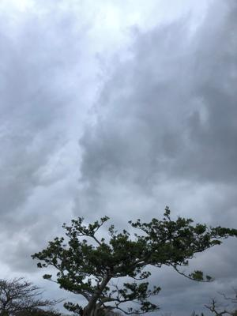
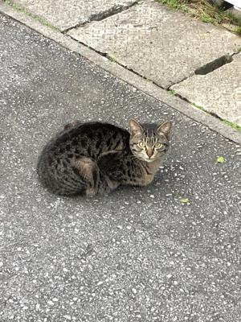
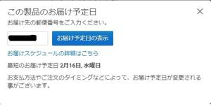

うるがいの話 ある日
最新: 建国記念の日【うるがいの話 ある日】とは 一日だけのプログです
『うるがいの話』の最新一日だけのプログで、通信料が少なく経済的だ。カニの画像をクリックすると全ての日付が載る『うるがいの話』サイトを表示します
|
|
【うるがいの話】 うるがい(ｳﾙｶﾞｲ urugai)とは、『もずくがに』の名前でとても大きくなります。 |
|---|---|
|
|
【カミマヤーの話】 猫のことを方言でマヤーといいます。カミマヤー（kamimayaa）とは、神の猫のことです。 |
|
【たながぁの音楽】 たながぁ（ﾀﾅｶﾞｰtanagaa）とは手長えびのことで、何種類かあり大きいのは車 エビぐらいになります。 |

|
【ぶながぁの話】 ぶながー(bunagaa)とは、赤い髪の毛、赤い身体、そして身長は１ｍ２０ｃｍ ぐらい、川の蟹を食べているの目撃された。場所は沖縄県国頭郡大宜味村のと ある村僕の隣近所に住んでいる爺さんから、聞いた話です。 |
|
|
【ギーマの話】 ギーマ(giima)とは、山原の里山に咲くスズランに似た、 花を付けます。実は食べられます、 気が付くと口の周りが紫になっています。 |
2022年02月11日 (金）建国記念の日
16:03
 
市井の人々は三連休、近頃は曜日の感覚が少しづつ薄れてくる。大安吉日、と
うとう高性能のディスクトップをネットで注文する。この前から品物は決めて
いたが、値段が高いので暫く日を開けたほうがいいだろうと今日の日にした。
そしたら、２月８日から１１日間の間だけと値段が下がっていた。うーん、具
体的には￥１６５，３４４円が、９，３５８円下がって￥１５５，９８６円に
なった。もしかしてサイトは検索ログから、こいつは購入しそうだからあと一
押しという事をしているかも・・・。来週から動画研修は動画編集ソフトを使
った自習に入るようだ（座学は４週間とあったのでてっきり、２０日過ぎかな
と思っていたら、座学講座は４週間を今週まで２週間で圧縮して終えてしまっ
た、え！）、で何時頃届くだろうと購入するまえに事前にサイトで郵便番号を
入れて検索すると来週の水曜日１６日とあった。ヨシヨシ、ところがである購
入手続きの終了で、２０日になっているではないか！、となんでと思ったがも
うどうでもいいのである。

前々から、懸案だった『カミマヤーの話』で利用しているBitbucketホームペ
ージがパスワードの運用は来月３月１日からできませんと通知され、ＳＳＨ接
続におととい対応した。思わずパチパチと手を打つ、前回の『うるがいの話
ある日』のGithubより簡単に出来た（それでも３日間かかった）。ディスク
トップ２号を開発環境と使えたためである、購入したディスクトップは３号に
なる。ウッシウシ、ついでに工工四対応のため、テストで新規に作ったホーム
ページ 『たながぁの音楽』 （中身は仕掛だが）を作った。昨日とあるプログ
のには次のように書いてあった、おやナントマーである。
最近の自分は、何かに歓喜したことが有るのだろうか？
最後に手を叩いてぴょんぴょんしたのは、何十年前？ 笑。
このようにたまには、思い返してください。
いい天気である、高校３年生の建国記念の日も今日のような晴れだった。
１５時４４分 ビットコインの総資産 ￥１４、５４１↓